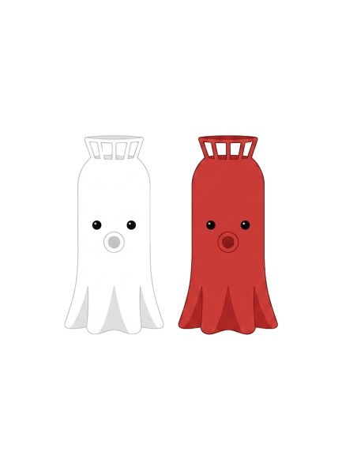

안녕, 등대
등대 지도
실시간 등대 식별
관련 사이트
🔦
실시간 등대 식별
현재 위치를 기반으로 주변 등대를 실시간으로 식별합니다.
폰을 돌리면 등대가 실제 방향으로 따라와요.
📍
GPS 위치 권한이 필요합니다
🧭
모바일: 나침반 센서로 방향 자동 인식
📷
모바일: 카메라 권한으로 AR 모드 활성화
🖱️
데스크탑: 드래그로 방향 탐색
시작하기
N 0°
표시 범위
15km
🧭
✕
–
–
–
–
🗺 지도에서 보기
위치 정보를 가져오는 중...
✕
🔗 바로가기 모음
☕
커뮤니티 바로가기
네이버 카페에서 등대 여행자들과 소통해요
→
🏆
스탬프투어 신청하기
전국 등대 스탬프 투어에 참여하세요
→